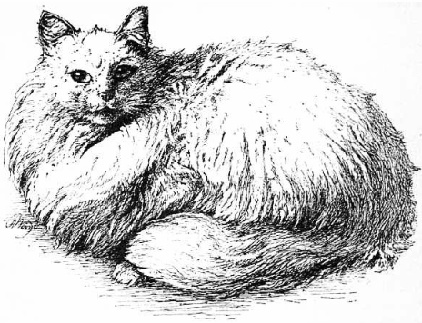

Usefullness of Cats
In our urban and suburban houses what should we do without cats? In our sitting or bedrooms, our libraries, in our kitchen and storerooms, our farms, barns, and rickyards, in our docks, our granaries, our ships, and our wharves, in our com markets, meat markets, and other places too numerous to mention, how useful they arel In our ships, however, the rats of set them at dafiance; still they are of great service.
How wonderfully patient is the cat when watching for rats or mice, awaiting their egress from their place of refuge or that which is their homel How well Shakespeare in Pericles, Act l, describes this keen attention of the cat to its natural pursuit!
The cat, with eye of burning coal, Now crouches from (before)
the mouse's tale.
A slight rustle, and the fugitive comes forth; a quick, sharp, resolute motion, and the cat has proved its usefulness. Let any one have a plague of rats and mice, as I once had, and let them be delivered therefrom by cats, as I was and they will have a lasting and kind regards for them.